REPRESENTATION
무엇을 어떤 언어로 기억하는가?
KG의 명시적 구조와 LLM의 암묵적 패턴이 수정·해석되는 방식을 비교합니다.
Knowledge Graphs & LLMs in Action · Chapter 2
지식 표현·추론·사람의 결정을 어떻게 하나의 지능형 자문 시스템으로 묶는가?
2장은 지능형 시스템을 지식 베이스·추론 엔진·사용자로 분해해 다시 조립합니다.
REPRESENTATION
KG의 명시적 구조와 LLM의 암묵적 패턴이 수정·해석되는 방식을 비교합니다.
REASONING
연역 결론·귀납 예측·LLM 제안과 사람의 최종 결정을 구분합니다.
학습 목표 — 자율/자문, 표현/추론, 상향식/목적 주도를 하나의 IAS 설계 지도로 연결합니다.
의료 진단 지원 시나리오 위에 시스템 유형, 지식 표현, 추론과 피드백, 개발 방법을 차례로 얹습니다.
지식 표현 + 추론
자율 ↔ 자문
KG·LLM·연역·귀납
질문·데이터·평가
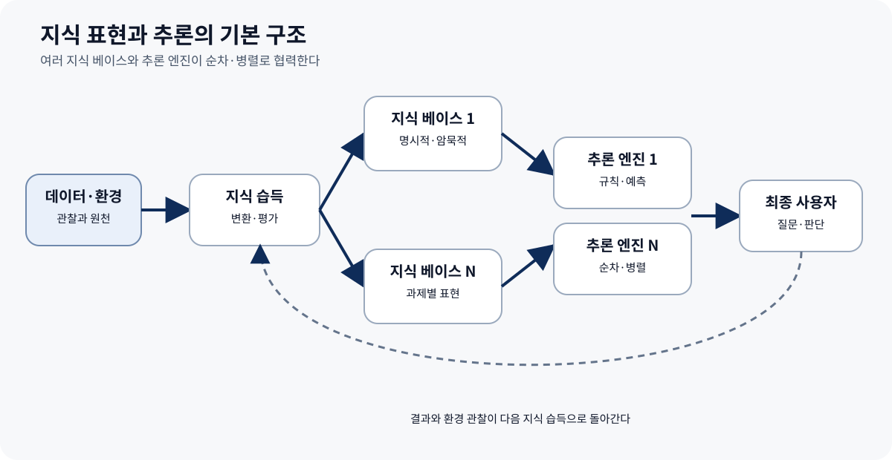
의료 진단 지원은 지식·추론·사용자 상호작용을 함께 보여 주는 복잡한 사례입니다. 시스템은 질문·검사·치료 선택지를 제안하기 위해 일반 의학 지식과 환자의 구체적 맥락을 결합해야 합니다.
의료 진단 지원으로 지식과 책임을 구체화합니다.
여러 알고리즘의 출력을 연결합니다.
사실·예측·권고를 구분합니다.
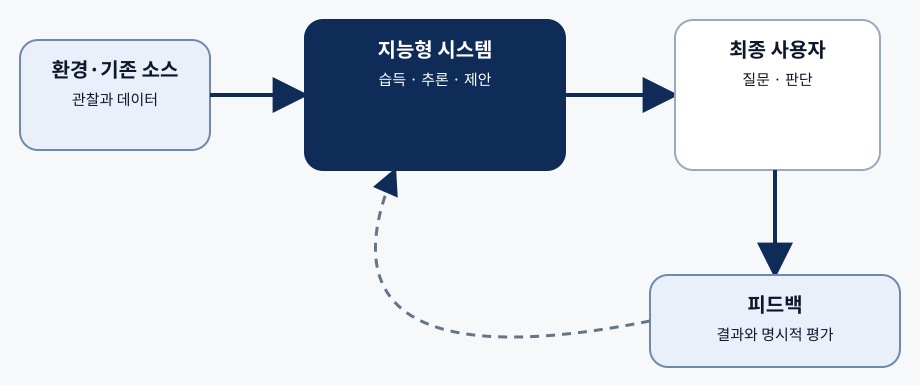
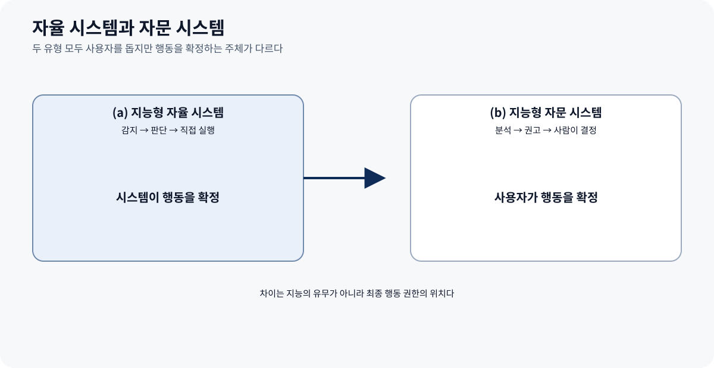
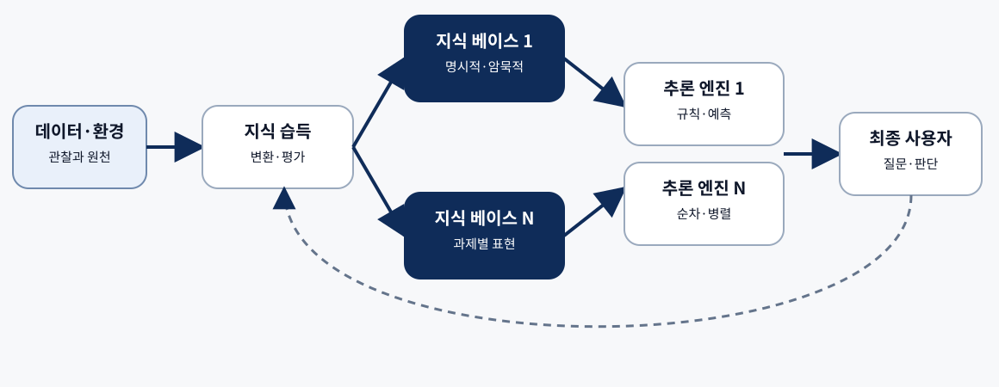
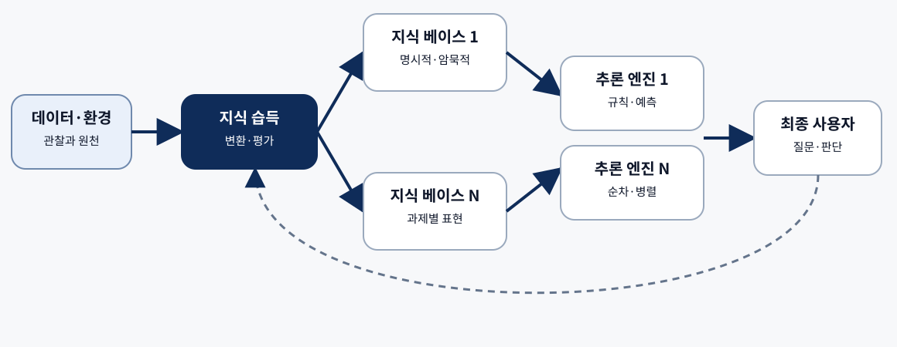
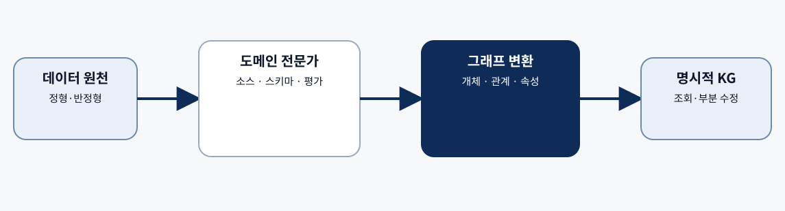
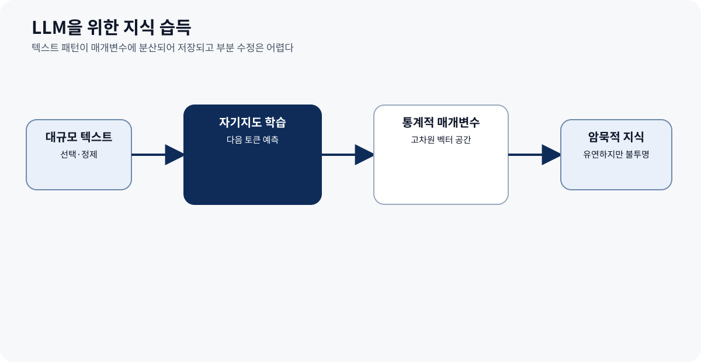
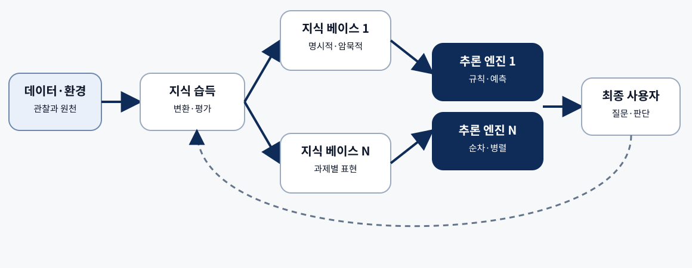
조건을 단순하게 읽으면 농부와 양이 한 번 함께 건너면 끝납니다.
A farmer stands at the side of the river with a sheep. There is a boat with
enough room for one person and one animal. How can the farmer get himself and
the sheep to the other side of the river using the boat in the smallest
number of trips?CHECK
늑대와 양배추가 없으므로 되돌아올 이유가 없습니다. 첫 이동 뒤 혼자 돌아와 같은 절차를 반복하는 순간이 그림 2.9의 오류입니다.
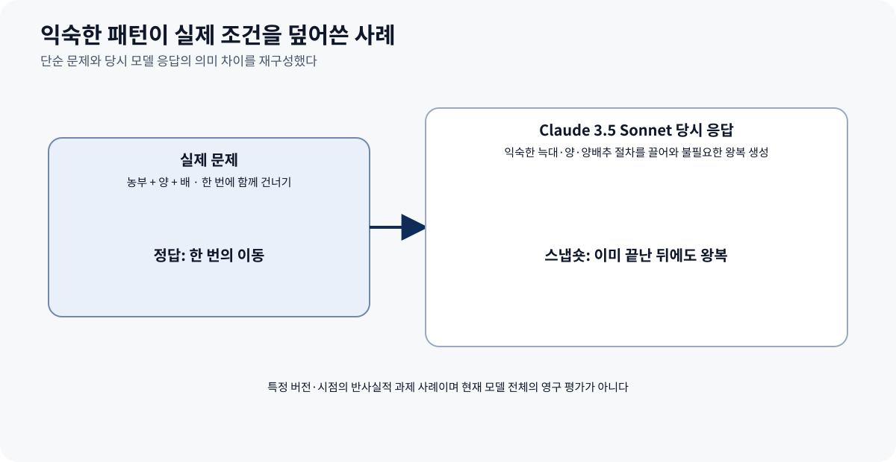
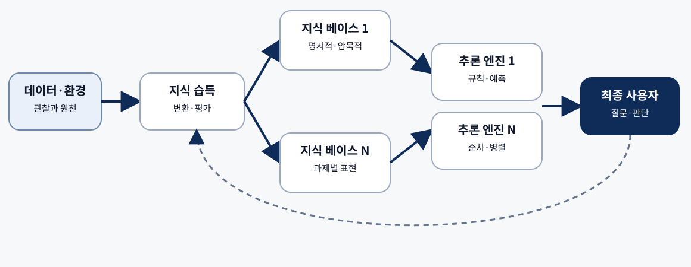
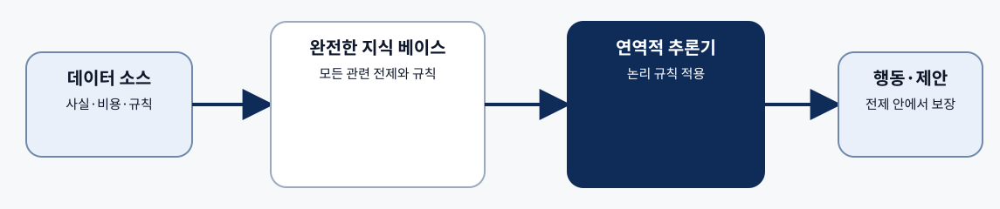
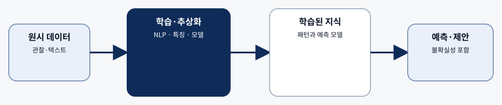
환자 기록이 불완전하고 증상이 비특이적일 때 LLM은 의학 문헌에서 학습한 패턴을 이용해 여러 가능성을 동시에 검토하고 우선순위가 있는 진단 접근을 제안할 수 있습니다.
불완전 기록과 비특이적 증상을 해석합니다.
여러 가능성의 검토 순서를 제안합니다.
확률적 후보를 사실로 승격하지 않습니다.
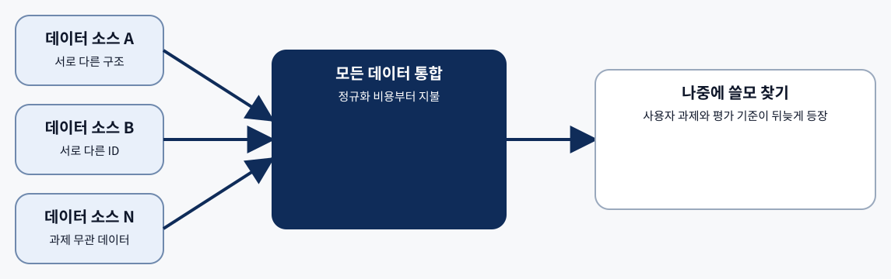
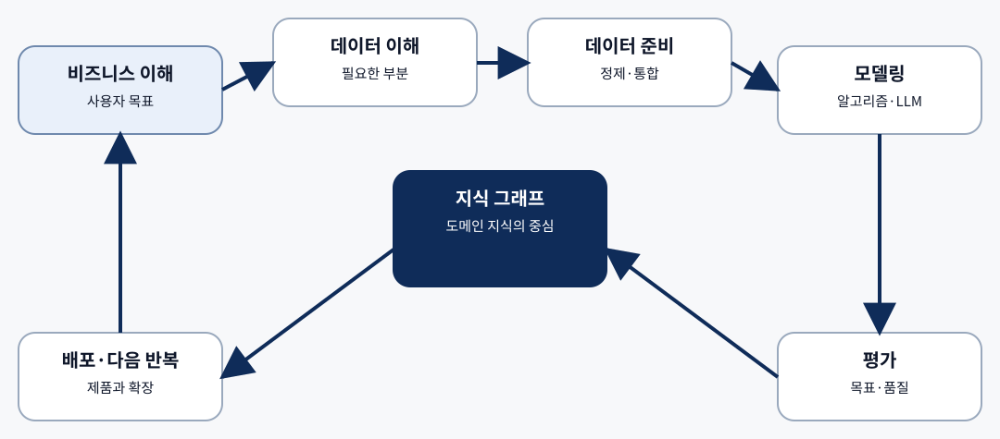
지식 표현과 추론은 왜 분리해서 설계하되 함께 평가해야 하는가?
자율 시스템과 자문 시스템은 최종 행동 권한과 사용자 역할이 어떻게 다른가?
상향식 데이터 통합보다 목적 주도 KG 개발이 먼저 고정하는 것은 무엇인가?
THREE TAKEAWAYS
KG의 명시적 지식과 LLM의 암묵적 패턴을 구분합니다.
연역 결론·귀납 예측·LLM 후보의 확실성을 구분합니다.
자문 시스템의 권고를 검토하고 행동을 확정합니다.
Q&A